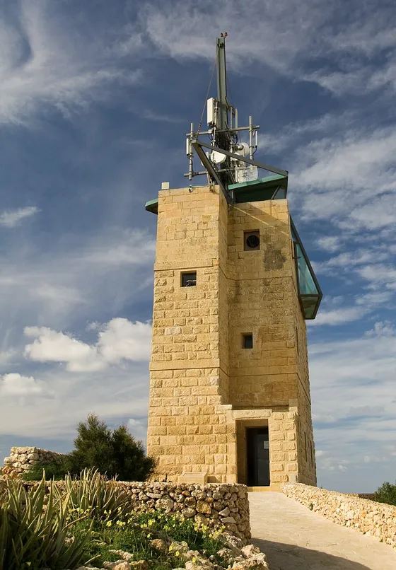

Mekren’s Bakery
The Nadur bakery describes its wood-fired ftira, pizza and qassatat. Check current collection details with the bakery.
Eastern Gozo
The parish square and the Ta’ Kenuna ridge. Find the village bakeries, get your bearings around the church, and check the bus before heading down to the ferry.

The church dedicated to Saints Peter and Paul anchors Pjazza San Pietru u San Pawl. Use the square as a meeting point for the village centre and the tower as a separate landmark on the ridge. Visit Gozo dates Ta’ Kenuna to 1848 and describes its role in communications between Malta and Gozo. The tower stands beside a botanical garden. Check local information before planning entry.
The coast has a different setting. Visit Gozo places Ta’ Isopu Tower between San Blas and Daħlet Qorrot. If you are heading toward a bay or meeting someone near Ta’ Kenuna, confirm the exact location and current approach before setting off. The In-Nadur guide from Visit Gozo describes these landmarks.
The Nadur bakery describes its wood-fired ftira, pizza and qassatat. Check current collection details with the bakery.
Visit Gozo places Maxokk in the village centre and identifies ftira and pizza as its focus.
The Quaint Collection lists this restaurant at its Nadur location by the main square and describes local and Mediterranean cooking.
Malta Public Transport lists Nadur stop 1723 on route 303 and includes In-Nadur on route 322. Use the journey planner for the stop, direction and date before leaving the square.
For Malta, plan the land journey to Mġarr harbour separately from the Gozo Channel ferry to Ċirkewwa. Check Gozo Channel’s service information for departures. For appointments, Victoria Health Centre publishes its Gozo service and appointment information.
The map pin marks the parish church footprint by the square.
Map data © OpenStreetMap contributors.
Editorial sources reviewed 17 November 2026.
Nexus Marketplace
See local homes and explore food, shops and everyday places around the neighbourhood.
Mapped places within 2 km of the centre. This can include nearby neighbourhoods.